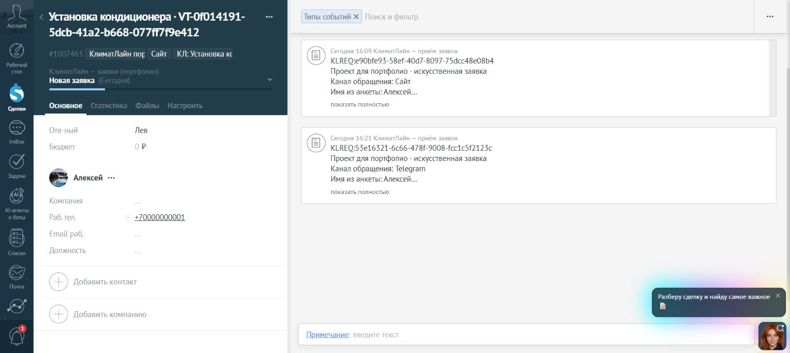
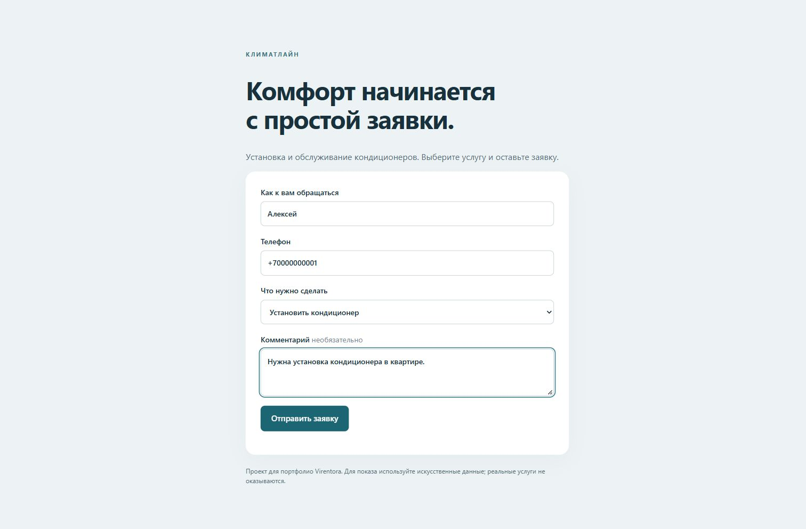

Без новой записи
Повторная доставка той же заявки не создаёт новую запись.
Обращения с сайта и из Telegram поступают в одну CRM: контакты, сделки, задачи и уведомления. Повторные обращения сохраняются в истории по заданным правилам.
«КлиматЛайн» — проект для портфолио об установке и обслуживании кондиционеров. Интеграция работает с настоящими amoCRM и Telegram; для проверки использованы искусственные данные. Это не клиентское внедрение.
Человек выбирает услугу и оставляет контакт.
Найти существующие или создать новые. Сохранить источник и историю обращения.
Создать задачу на обработку заявки.
Отправить в Telegram уведомление со ссылкой на сделку.
Нажмите на снимок, чтобы увеличить. В масштабе 100% можно прочитать текст CRM.

Увеличить снимокОбщий контакт, сделка и история двух каналов.
Работающая интеграция, сентябрь 2026. Искусственные данные.
Увеличить снимокИмя, телефон, услуга и комментарий — начало сценария.
Работающая интеграция, сентябрь 2026. Искусственные данные.Повторная доставка той же заявки не создаёт новую запись.
Новое обращение по той же услуге добавляется в открытую сделку.
Другая услуга или закрытая предыдущая сделка требуют новой.
Если результат записи нельзя подтвердить или найдено несколько совпадений, обработка останавливается для сверки. Запись вслепую не повторяется.
Расскажите Льву, откуда приходят заявки и как вы обрабатываете их сейчас.
Обсудить похожую интеграциюПроект показывает приём и обработку заявок. Телефония, аналитика продаж и полное внедрение CRM в его объём не входят. Снимки фиксируют работу локальной версии в сентябре 2026 года.